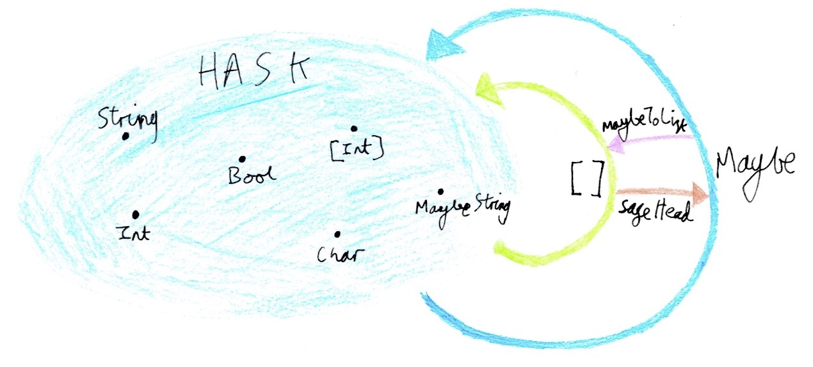
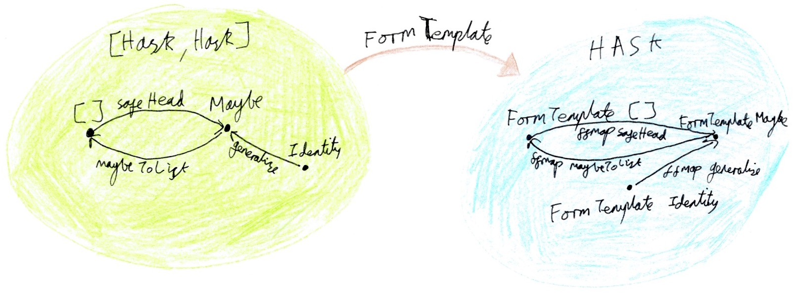

Functor Functors
You can teach a new dog old tricks.
One of the fun things about category theory is that once you’ve learned an idea in one context it’s easy to apply it to another one. Of the numerous categories available to Haskell programmers, Hask, the category of Haskell types and functions, gets the lion’s share of the attention. Working with standard abstractions in more overlooked categories is a great way to reuse ideas: it makes you look clever, like you’ve invented something new, but actually all you’ve done is put the building blocks together differently. I won’t tell if you don’t.
Templates: Reusable Records
Every now and then I’ll see a question on Stack Overflow or Reddit in which a programmer is trying to work with a bunch of record types which share a similar structure. For a contrived example, in a shopping system you may want to differentiate between completed checkout forms, which are ready to be dispatched, and “draft” checkout forms, which the user is currently filling in. The simplest way to do this is to build separate types, and write a function to upgrade a draft form to a regular form if all of its fields are filled in.
data CardType = Visa | AmEx | Mastercard
data Form = Form {
form_email :: Text,
form_cardType :: CardType,
form_cardNumber :: Text,
form_cardExpiry :: Day
}
data DraftForm = DraftForm {
draftForm_email :: Maybe Text,
draftForm_cardType :: Maybe CardType,
draftForm_cardNumber :: Maybe Text,
draftForm_cardExpiry :: Maybe Day
}
toForm :: DraftForm -> Maybe Form
toForm (DraftForm
(Just email)
(Just cardType)
(Just cardNumber)
(Just cardExpiry)) = Just $
Form email cardType cardNumber cardExpiry
toForm _ = NothingNow, the standard trick to de-duplicate these two types is to derive both from what I’ll call a template type, wrapping each field of the template in some type constructor f. You recover Form by setting f to the boring Identity functor, and you get DraftForm by setting f to Maybe.
data FormTemplate f = FormTemplate {
_email :: f Text,
_cardType :: f CardType,
_cardNumber :: f Text,
_cardExpiry :: f Day
}
type Form = FormTemplate Identity
type DraftForm = FormTemplate MaybeSo a template is a record type parameterised by a type constructor. It’ll generally have a kind of (* -> *) -> *. The fields of the record are the type constructor applied to a variety of different type arguments. Working with a template typically involves coming up with an interesting type constructor (* -> *) and plugging it in to get interestingly-typed fields. You can think of a record as a container of fs.
This trick has become Haskell folklore - I couldn’t tell you where I first saw it - but I’ve only seen a few people talk about what happens when you treat templates as first class citizens. To get used to this style, a simple example is giving names to specific instantiations of arbitrary templates:
type Record t = t Identity
type Partial t = t Maybe
type Form = Record FormTemplate
type DraftForm = Partial FormTemplateThe rest of this blog post is about treating template types intuitively as fixed-size containers of functors. I’ll be taking familiar tools for working with containers of values - Functor, Traversable, Representable - and applying them to the context of containers of functors.
Functors from the Category of Endofunctors
In Haskell, categories are represented as a kind k of objects and a type constructor c :: k -> k -> * of morphisms between those objects. If the category C has objects in k1 and morphisms in c, and D has objects in k2 and morphisms in d, then a functor from C to D is a type constructor f :: k1 -> k2 mapping objects paired with an operation fmap :: c a b -> d (f a) (f b) mapping the morphisms. The standard Functor class is for endofunctors on Hask - the special case in which k1 ~ k2 ~ * and c ~ d ~ (->).

Given two categories C and D, you can construct the category of functors between C and D, written as [C, D]. Objects in this category are functors from C to D, and morphisms are natural transformations between those functors. Since [C, D] is a regular category, you can of course have functors mapping that category to other categories. So in Haskell that’d be a type of kind (k1 -> k2) -> k3. I’ll call such types functor functors.
We’re talking about record templates of kind (* -> *) -> *. This fits the pattern of a functor from the functor category, with k1 ~ k2 ~ k3 ~ *. So the functor category in question is the category of endofunctors on Hask (that is, members of the standard Functor class), and the destination category is Hask. So it’s reasonable to expect record templates to be functorial in their argument:
-- natural transformations between functors f and g
type f ~> g = forall x. f x -> g x
-- "functor functors", functors from the functor category
class FFunctor f where
ffmap :: (Functor g, Functor h) => (g ~> h) -> f g -> f h
instance FFunctor FormTemplate where
ffmap eta (FormTemplate email cardType cardNumber cardExpiry)
= FormTemplate
(eta email)
(eta cardType)
(eta cardNumber)
(eta cardExpiry)FFunctor comes with the usual functor laws. The only difference is the types.
-- identity
ffmap id = id
-- composition
ffmap (eta . phi) = ffmap eta . ffmap phi
ffmap encodes the notion of generalising the functor a template has been instantiated with. If you can embed the functor f into g, then you can map a record of fs to a record of gs by embedding each f. (This is also sometimes called “hoisting”.) For example, the boring Identity functor can be embedded into an arbitrary Applicative by injecting the contained value using pure. We can use this to turn a total record into a partial one:
generalise :: Applicative f => Identity a -> f a
generalise (Identity x) = pure x
toPartial :: FFunctor t => Record t -> Partial t
toPartial = ffmap generaliseTraversing Records
Now that we have a new dog, it’s natural to ask which old tricks we can teach it. With the intuition that a template t f is like a container of fs, what does it mean to traverse such a container? sequenceA :: Applicative f => t (f a) -> f (t a) takes a container of strategies to produce values and sequences them to get a strategy to produce a container of values. Replacing value with functor in the above sentence, it’s clear that we need to decide on a notion of “strategy to produce a functor”. With thanks to Li-yao Xia, the simplest of such notions is a regular applicative functor a returning a functorial value g x - that is, Compose a g.
class FFunctor t => FTraversable t where
ftraverse :: (Functor f, Functor g, Applicative a)
=> (f ~> Compose a g) -> t f -> a (t g)
ftraverse eta = fsequence . ffmap eta
fsequence :: (Functor f, Applicative a)
=> t (Compose a f) -> a (t f)
fsequence = ftraverse id
ffmapDefault :: (Functor f, Functor g, FTraversable t)
=> (f ~> g) -> t f -> t g
ffmapDefault eta =
runIdentity . ftraverse (Compose . Identity . eta)
fsequence' :: (FTraversable t, Applicative a) => t a -> a (Record t)
fsequence' = ftraverse (Compose . fmap Identity)The FTraversable laws come about by adjusting the Traversable laws to add some Compose-bookkeeping.
-- naturality
nu . ftraverse eta = ftraverse (Compose . nu . getCompose . eta)
-- for any applicative transformation nu
-- identity
ftraverse (Compose . Identity) = Identity
-- composition
ftraverse (Compose . Compose . fmap (getCompose.phi) . getCompose . eta)
= Compose . fmap (ftraverse phi) . ftraverse etaImplementations of traverse look like implementations of fmap but in an applicative context. Likewise, implementations of ftraverse look like implementations of ffmap in an applicative context, with a few getComposes scattered around.
instance FTraversable FormTemplate where
ftraverse eta (FormTemplate email cardType cardNumber cardExpiry)
= FormTemplate <$>
(getCompose $ eta email) <*>
(getCompose $ eta cardType) <*>
(getCompose $ eta cardNumber) <*>
(getCompose $ eta cardExpiry)This is where things start to get interesting. The toForm function, which converts a draft form to a regular form if all of its fields have been filled in, can be defined tersely in terms of ftraverse.
toRecord :: FTraversable t => Partial t -> Maybe (Record t)
toRecord = ftraverse (Compose . fmap Identity)
toForm :: DraftForm -> Maybe Form
toForm = toRecordHere’s another example: a generic program, defined by analogy to Foldable’s foldMap, to collapse the fields of a record into a monoidal value. Note that f () -> m is isomorphic to, but simpler than, forall x. f x -> m. Annoyingly, we have to give a type signature to mkConst to resolve the ambiguity over g in the call to ftraverse. I’m picking Empty as a way of demonstrating that I have nothing up my sleeves.
data Empty a deriving Functor
ffoldMap :: forall f t m. (Monoid m, Functor f, FTraversable t)
=> (f () -> m) -> t f -> m
ffoldMap f = getConst . ftraverse mkConst
where
-- using ScopedTypeVariables to bind f
mkConst :: f x -> Compose (Const m) Empty x
mkConst = Compose . Const . f . ($> ())Zipping templates
Given a pair of records of the same shape t, we should be able to combine them point-wise, matching up the fields of each: fzip :: t f -> t g -> t (Product f g). In Hask, “combining point-wise” is exactly what the “reader” applicative (->) r does, so any functor which enjoys an isomorphism to (->) r for some r has at least a zippy Applicative instance. Such functors are called representable functors and they are members of the class Representable.
Of course, we’re working with functors from the functor category, so the relevant notion of Representable will need a little adjustment. Instead of an isomorphism to a function (->) r we’ll use an isomorphism to a natural transformation (~>) r.
class FFunctor t => FRepresentable t where
type FRep t :: * -> *
ftabulate :: (FRep t ~> f) -> t f
findex :: t f -> FRep t a -> f a
fzipWith :: FRepresentable t
=> (forall x. f x -> g x -> h x)
-> t f -> t g -> t h
fzipWith f t u = ftabulate $ \r -> f (findex t r) (findex u r)
fzipWith3 :: FRepresentable t
=> (forall x. f x -> g x -> h x -> k x)
-> t f -> t g -> t h -> t k
fzipWith3 f t u v = ftabulate $
\r -> f (findex t r) (findex u r) (findex v r)
fzip :: FRepresentable t => t f -> t g -> t (Product f g)
fzip = fzipWith PairThe laws for FRepresentable simply state that ftabulate and findex must witness an isomorphism:
-- isomorphism
ftabulate . findex = findex . ftabulate = idFRep will typically be a GADT: it tells you what type of value one should expect to find at a given position in a record.
data FormTemplateRep a where
Email :: FormTemplateRep Text
CardType :: FormTemplateRep CardType
CardNumber :: FormTemplateRep Text
CardExpiry :: FormTemplateRep Day
instance FRepresentable FormTemplate where
type FRep FormTemplate = FormTemplateRep
ftabulate eta = FormTemplate
(eta Email)
(eta CardType)
(eta CardNumber)
(eta CardExpiry)
findex p Email = _email p
findex p CardType = _cardType p
findex p CardNumber = _cardNumber p
findex p CardExpiry = _cardExpiry pSomething useful you can do with this infrastructure: filling in defaults for missing values of a partial record. Or, looking at it the other way, overriding certain parts of a record.
with :: FRepresentable t => Record t -> Partial t -> Record t
with = fzipWith override
where override x Nothing = x
override _ (Just y) = Identity y
fillInDefaults :: FRepresentable t => Partial t -> Record t -> Record t
fillInDefaults t defaults = defaults `with` tYou can also make a record of Monoid values into a Monoid, once again by zipping.
newtype Wrap t f = Wrap { unWrap :: t f }
makeWrapped ''Wrap -- from Control.Lens.Wrapped
instance (FRepresentable t, Monoid c) => Monoid (Wrap t (Const c)) where
mempty = Wrap $ ftabulate (const (Const mempty))
Wrap t `mappend` Wrap u = Wrap $ fzipWith mappend t uLenses
Rather than come up with a new notion of Lens formulated in terms of FFunctor, we can reuse the standard Lens type as long as we’re careful about how polymorphic lenses should be. Specifically, a lens into a record template should express no opinion as to which functor the template should be instantiated with.
newtype FLens t a = FLens (forall f. Lens' (t f) (f a))We can store a template’s lenses in an instance of the template itself!
type Lenses t = t (FLens t)
class HasLenses t where
lenses :: Lenses t
makeLenses ''FormTemplate
instance HasLenses FormTemplate where
lenses = FormTemplate {
_email = FLens email,
_cardType = FLens cardType,
_cardNumber = FLens cardNumber,
_cardExpiry = FLens cardExpiry
}Compositional Validation
Now for an extended example: form validation. We’ll be making use of all of the tools from above - zipping, traversing, and mapping - to design a typed API for validating individual fields of a form.
Either isn’t a great choice for a validation monad, because Either aborts the computation at the first failure. You typically want to report all the errors in a form. Instead, we’ll be working with the following type, which is isomorphic to Either but with an Applicative instance which returns all of the failures in a given computation, combining the values using a Monoid. So it’s kind of a Frankensteinian mishmash of the Either and Writer applicatives.
data Validation e a = Failure e | Success a deriving Functor
instance Bifunctor Validation where
bimap f g (Failure e) = Failure (f e)
bimap f g (Success x) = Success (g x)
instance Monoid e => Applicative (Validation e) where
pure = Success
Success f <*> Success x = Success (f x)
Failure e1 <*> Failure e2 = Failure (e1 `mappend` e2)
Failure e1 <*> _ = Failure e1
_ <*> Failure e2 = Failure e2This Applicative instance has no compatible Monad instance.
We’ll build a library for validation processes which examine a single field of a record at a time. A validation rule for a field typed a is a function which takes an a and returns a Validation e a.
newtype Validator e a = Validator { runValidator :: a -> Validation e a }
-- a validator which always succeeds
noop :: Validator e a
noop = Validator SuccessIf a given field has multiple validation rules, you can compose them under the assumption that each validator leaves its input unchanged.
(&>) :: Monoid e => Validator e a -> Validator e a -> Validator e a
Validator f &> Validator g = Validator $ \x -> f x *> g x
-- for example
emailValidator :: Validator [Text] Text
emailValidator = hasAtSymbol &> hasTopLevelDomain
where
hasAtSymbol = Validator $ \email ->
if "@" `isInfixOf` email
then Success email
else Failure ["No @ in email"]
hasTopLevelDomain = Validator $ \email ->
if any (`isSuffixOf` email) topLevelDomains
then Success email
else Failure ["Invalid TLD"]
topLevelDomains = [".com", ".org", ".co.uk"] -- etcThe plan is to store these Validators in a record template, zip them along an instance of the record itself, and then traverse the result to get either a validated record or a collection of errors. To make things interesting, we’ll store the validation results for a given field in the matching field of another record.
type Validators e t = t (Validator e)
type Errors e t = t (Const e)
-- turn a record of validators into a validator of records
validate :: (HasLenses t, FTraversable t, FRepresentable t, Monoid e)
=> Validators e t
-> Validator (Errors e t) (Record t)
validate validators = Validator $ \record ->
first unWrap $
fsequence' $
fzipWith3 applyValidator lenses validators record
where
applyValidator
(FLens lens)
(Validator validator)
(Identity value) =
let setError e = mempty & _Wrapped'.lens._Wrapped' .~ e
in first setError $ validator valueapplyValidator takes a lens into a record field, a validator for that field and the value in that field. It applies the validator to the value; upon failure it stores the error message (e) in the correct field of the Errors record using the lens. fzipWith3 handles the logic of running applyValidator for each field of the record, then fsequence' combines the resulting Validation applicative actions into a single one. So all of the errors from all of the fields are eventually collected into the matching fields of the Errors record and combined monoidally.
A quick test, wherein I test validation on the email field:
ghci> let formValidator = validate
$ FormTemplate emailValidator noop noop noop
ghci> let today = read "2017-08-17" :: Day
ghci> let form1 = FormTemplate
(Identity "bhodgson@stackoverflow.com")
(Identity Visa)
(Identity "1234567890123456")
(Identity today)
ghci> runValidator formValidator form1
Success (FormTemplate {
_email = Identity "bhodgson@stackoverflow.com",
_cardType = Identity Visa,
_cardNumber = Identity "1234567890123456",
_cardExpiry = Identity 2017-08-17
})
ghci> let form2 = FormTemplate
(Identity "notanemail")
(Identity Visa)
(Identity "1234567890123456")
(Identity today)
ghci> runValidator formValidator form2
Failure (FormTemplate {
_email = Const ["No @ in email","Invalid TLD"],
_cardType = Const [],
_cardNumber = Const [],
_cardExpiry = Const []
})Code review
So we have a categorical framework for working with records and templates. Other things fit into this framework, more or less neatly:
- Monad transformers are often functorial in their
margument. Fix f(a “list offs”, if you will) is also a functor functor, whereffmapping represents a change of variables.- Since the
Const,Sum,ProductandComposetype combinators are poly-kinded, they can be reused as functor functors too. - Add another primitive
FFunctorto apply a functor to a type,newtype At a f = At { getAt :: f a }, and you have a kit to build polynomial functor functors with which you can build templates and write generic programs.
One design decision I made when developing the FFunctor class was to give ffmap a (Functor f, Functor g) constraint, so you can only ffmap between types that are in fact functors. This is mathematically principled in some sense, but it has certain engineering tradeoffs compared to an unconstrained type for ffmap. It enables more instances of FFunctor - for example, you can only write Fix’s ffmap with a Functor constraint for either the input or output type parameters - but it rules out certain usages of ffmap. You can’t ffmap over a template containing Validators, for example, because Validator is not a Functor. I didn’t put the same Functor constraints into FRepresentable’s methods. An FRep type typically won’t be functorial - it’ll be GADT-like - so adding a Functor (FRep t) constraint would be far too restrictive.
You’ll notice that the concept of an applicative functor functor is conspicuously absent from my presentation above. FApplicative would probably look something like this:
newtype (f :-> g) a = Morph { getMorph :: f a -> g a }
class FFunctor t => FApplicative t where
fpure :: (forall a. f a) -> t f
fap :: t (f :-> g) -> t f -> t g
fliftA :: FApplicative t => (f ~> g) -> t f -> t g
fliftA eta t = fpure (Morph eta) `fap` t
instance FApplicative FormTemplate where
fpure x = FormTemplate x x x x
fap
(FormTemplate
(Morph f1)
(Morph f2)
(Morph f3)
(Morph f4))
(FormTemplate
email
cardType
cardNumber
cardExpiry)
= FormTemplate
(f1 email)
(f2 cardType)
(f3 cardNumber)
(f4 cardExpiry)FApplicative is a more general interface than FRepresentable, in that it supports notions of composition other than zipping. However, that bookkeeping :-> newtype wrapper is inconvenient. With the normal Applicative class you can map an n-ary function over n applicative values directly: f <$> x <*> y <*> z. With FApplicative you have to apply the Morph constructor as many times as f has arguments: fpure (Morph $ \x -> Morph $ \y -> Morph $ \z -> f x y z) `fap` t `fap` u `fap` v, which becomes very unwieldy very quickly. (/u/rampion has come up with nicer syntax for this, but it involves a more complicated formulation of FApplicative.) On the other hand, FApplicative does open up some interesting options for the design of FTraversable: one can traverse in an FApplicative rather than an Applicative. This gives some nice type signatures - fsequence :: (FTraversable t, FApplicative f) => t f -> f t - and is strictly more general than the FTraversable I gave above, since any Applicative can be lifted into an FApplicative by composition (newtype ComposeAt a f g = ComposeAt { getComposeAt :: f (g a) }).
How useful are these tools in practice? Would I structure a production application around functor functors? Probably not. It’s a question of balance - while it’s useful to recognise functorial structures in categories other than Hask as a thinking tool, actually representing such abstractions in code doesn’t always pay off. Haskell already has a rich ecosystem of tools for working with the Functor family, but there’s much less code in the wild that’s structured around functor functors. This is partly because Functor has the advantage of being a standard class in base, but it’s also because code built around functor functors is a little less convenient to work with, typically requiring some tedious newtype bookkeeping.
Over the course of putting together this article I came across some work by others on this very topic. I’ve spotted versions of these classes being packaged with bigger libraries such as hedgehog and quickcheck-state-machine. There are also a few packages providing similar tools. The most mature of these seems to be rank2classes, which includes some Template Haskell tools for deriving instances; there’s also the Conkin package, which has a well-written tutorial focusing on working with data in column-major order.
Haskell’s full of big ideas and powerful programming idioms. In this post we saw an example of reinterpreting some familiar tools - Functor, Traversable and Representable - in a new context. With the intuition that a record template is a container of functors, and the formalism of functors from the functor category, we were able to reuse intuitions about those familiar tools to write terse and generic programs.